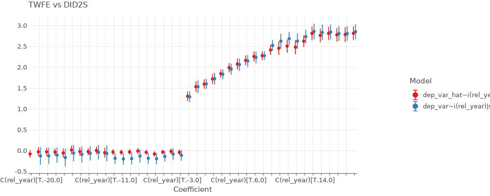

News
PyFixest 0.13.0
New Features
- Introduces a new
pyfixest.didmodule which contains routines for Difference-in-Differences estimation. - Introduces support for basic versions of the local projections DiD estimator following Dube et al (2023)
- Adds a new vignette for Difference-in-Differences estimation.
- Reports R2 values in
etable().
PyFixest 0.12.0
Enhancements:
- Good performance improvements for singleton fixed effects detection. Thanks to @styfenschaer for the PR! See #229.
- Uses the r2u project for installing R and R packages on github actions, with great performance improvements.
- Allows to pass
polarsdata frames tofeols(),fepois()andpredict(). #232. Thanks to @vincentarelbundock for the suggestion!
Bug Fixes:
- Missing variables in features were not always handled correctly in
predict()withnewdatanotNonein the presence of missing data, which would lead to an error. See #246 for details. - Categorical variables were not always handled correctly in
predict()withnewdatanotNone, because the number of fixed effects levels innewdatamight be smaller than indata. In consequence, some levels were not found, which lead to an error. See #245 for details. Thanks to @jiafengkevinchen for the pointer! - Multicollinearity checks for over-identified IV was not implemented correctly, which lead to a dimension error. See #236 for details. Thanks to @jiafengkevinchen for the pointer!
- The number of degrees of freedom
kwas computed incorrectly if columns were dropped from the design matrixXin the presence of multicollinearity. See #235 for details. Thanks to @jiafengkevinchen for the pointer! - If all variables were dropped due to multicollinearity, an unclear and imprecise error message was produced. See #228 for details. Thanks to @manferdinig for the pointer!
- If selection
fixef_rm = 'singleton',feols()andfepois()would fail, which has been fixed. #192
Dependency Requirements
- For now, sets
formulaicversions to be0.6.6or lower as version1.0.0seems to have introduced a problem with thei()operator, See #244 for details. - Drops dependency on
pyhdfe.
PyFixest 0.11.1
- Fixes some bugs around the computation of R-squared values (see issue #103).
- Reports R-squared values again when calling
.summary().
PyFixest 0.11.0
- Significant speedups for CRV1 inference.
PyFixest 0.10.12
Fixes a small bug with the separation check for poisson regression #138.
PyFixest 0.10.11
Fixes bugs with i(var1, var2) syntax introduced with PyFixest 0.10.10.
PyFixest 0.10.10
Fixes a bug with variable interactions via i(var) syntax. See issue #221.
PyFixest 0.10.9
Makes etable() prettier and more informative.
PyFixest 0.10.8
Breaking changes
Reference levels for the i() formula syntax can no longer be set within the formula, but need to be added via the i_ref1 function argument to either feols() and fepois().
New feature
A dids2() function is added, which implements the 2-stage difference-in-differences procedure à la Gardner and follows the syntax of @kylebutts did2s R package.
from pyfixest.did.did import did2s
from pyfixest.estimation import feols
from pyfixest.visualize import iplot
import pandas as pd
import numpy as np
df_het = pd.read_csv("https://raw.githubusercontent.com/s3alfisc/pyfixest/master/pyfixest/did/data/df_het.csv")
fit = did2s(
df_het,
yname = "dep_var",
first_stage = "~ 0 | state + year",
second_stage = "~i(rel_year)",
treatment = "treat",
cluster = "state",
i_ref1 = [-1.0, np.inf],
)
fit_twfe = feols(
"dep_var ~ i(rel_year) | state + year",
df_het,
i_ref1 = [-1.0, np.inf]
)
iplot([fit, fit_twfe], coord_flip=False, figsize = (900, 400), title = "TWFE vs DID2S")
PyFixest 0.10.7
- Adds basic support for event study estimation via two-way fixed effects and Gardner’s two-stage “Did2s” approach. This is a beta version and experimental. Further updates (i.e. proper event studies vs “only” ATTs) and a more flexible did2s front end will follow in future releases.
%load_ext autoreload
%autoreload 2
from pyfixest.did.did import event_study
from pyfixest.summarize import etable
import pandas as pd
df_het = pd.read_csv("pyfixest/did/data/df_het.csv")
fit_twfe = event_study(
data = df_het,
yname = "dep_var",
idname= "state",
tname = "year",
gname = "g",
estimator = "twfe"
)
fit_did2s = event_study(
data = df_het,
yname = "dep_var",
idname= "state",
tname = "year",
gname = "g",
estimator = "did2s"
)
etable([fit_twfe, fit_did2s])
# | Coefficient | est1 | est2 |
# |:--------------|:-----------------|:-----------------|
# | ATT | 2.135*** (0.044) | 2.152*** (0.048) |
# Significance levels: * p < 0.05, ** p < 0.01, *** p < 0.001PyFixest 0.10.6
- Adds an
etable()function that outputs markdown, latex or a pd.DataFrame.
PyFixest 0.10.5
- Fixes a big in IV estimation that would trigger an error. See here for details. Thanks to @aeturrell for reporting!
PyFixest 0.10.4
- Implements a custom function to drop singleton fixed effects.
- Additional small performance improvements.
PyFixest 0.10.3
- Allows for white space in the multiway clustering formula.
- Adds documentation for multiway clustering.
PyFixest 0.10.2
- Adds support for two-way clustering.
- Adds support for CRV3 inference for Poisson regression.
PyFixest 0.10.1
- Adapts the internal fixed effects demeaning criteron to match `PyHDFE’s default.
- Adds Styfen as coauthor.
PyFixest 0.10
- Multiple performance improvements.
- Most importantly, implements a custom demeaning algorithm in
numba- thanks to Styfen Schaer (@styfenschaer), which leads to performance improvements of 5x or more:
%load_ext autoreload
%autoreload 2
import numpy as np
import time
import pyhdfe
from pyfixest.demean import demean
np.random.seed(1238)
N = 10_000_000
x = np.random.normal(0, 1, 10*N).reshape((N,10))
f1 = np.random.choice(list(range(1000)), N).reshape((N,1))
f2 = np.random.choice(list(range(1000)), N).reshape((N,1))
flist = np.concatenate((f1, f2), axis = 1)
weights = np.ones(N)
algorithm = pyhdfe.create(flist)
start_time = time.time()
res_pyhdfe = algorithm.residualize(x)
end_time = time.time()
print(end_time - start_time)
# 26.04527711868286
start_time = time.time()
res_pyfixest, success = demean(x, flist, weights, tol = 1e-10)
# Calculate the execution time
end_time = time.time()
print(end_time - start_time)
#4.334428071975708
np.allclose(res_pyhdfe , res_pyfixest)
# TruePyFixest 0.9.11
- Bump required
formulaicversion to0.6.5. - Stop copying the data frame in
fixef().
PyFixest 0.9.10
- Fixes a big in the
wildboottestmethod (see #158). - Allows to run a wild bootstrap after fixed effect estimation.
PyFixest 0.9.9
- Adds support for
wildboottestfor Python3.11.
PyFixest 0.9.8
- Fixes a couple more bugs in the
predict()andfixef()methods. - The
predict()argumentdatais renamed tonewdata.
PyFixest 0.9.7
Fixes a bug in predict() produced when multicollinear variables are dropped.
PyFixest 0.9.6
Improved Collinearity handling. See #145
PyFixest 0.9.5
- Moves plotting from
matplotlibtolets-plot. - Fixes a few minor bugs in plotting and the
fixef()method.
PyFixest 0.9.1
Breaking API changes
It is no longer required to initiate an object of type Fixest prior to running feols or fepois. Instead, you can now simply use feols() and fepois() as functions, just as in fixest. Both function can be found in an estimation module and need to obtain a pd.DataFrame as a function argument:
from pyfixest.estimation import fixest, fepois
from pyfixest.utils import get_data
data = get_data()
fit = feols("Y ~ X1 | f1", data = data, vcov = "iid")Calling feols() will return an instance of class Feols, while calling fepois() will return an instance of class Fepois. Multiple estimation syntax will return an instance of class FixestMulti.
Post processing works as before via .summary(), .tidy() and other methods.
New Features
A summary function allows to compare multiple models:
from pyfixest.summarize import summary
fit2 = feols("Y ~ X1 + X2| f1", data = data, vcov = "iid")
summary([fit, fit2])Visualization is possible via custom methods (.iplot() & .coefplot()), but a new module allows to visualize a list of Feols and/or Fepois instances:
from pyfixest.visualize import coefplot, iplot
coefplot([fit, fit2])The documentation has been improved (though there is still room for progress), and the code has been cleaned up a bit (also lots of room for improvements).